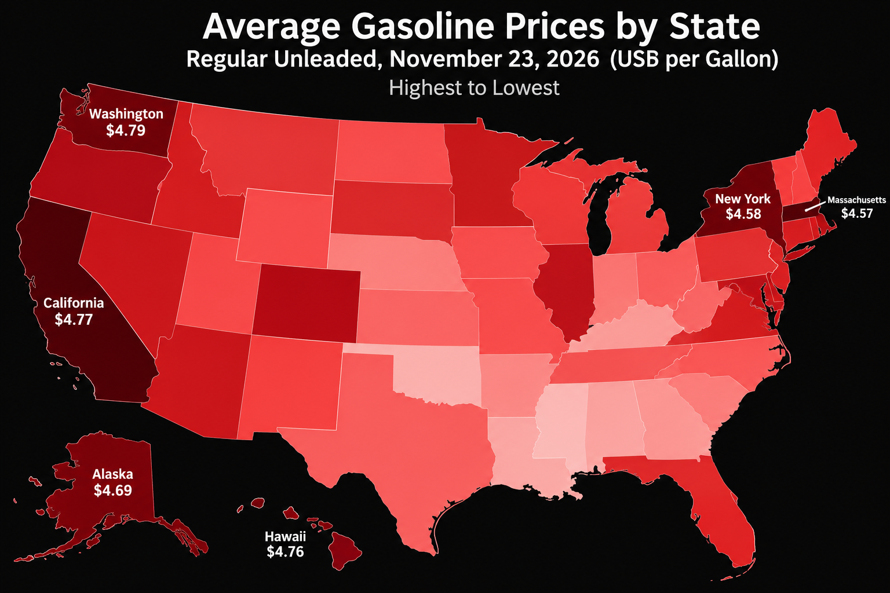
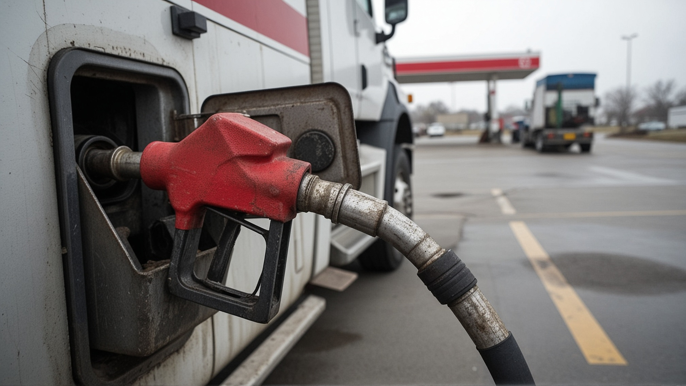

Your gas bill is about to be set by a strait 7,000 miles away
A $30 rise in crude costs the average US household $62 a month and the country $98 billion. The reserve built to cushion exactly this is at its lowest since 1982. Here is the arithmetic, the 15 states that pay most, and who wins when the rest of us lose.
Nothing you can do changes the price of a barrel, and the price of a barrel is about to be set by a strait most Americans could not find on a map. Roughly 20 million barrels a day move through Hormuz — about a fifth of global oil consumption and a quarter of all oil traded by sea. A credible threat to it puts a risk premium on every barrel traded anywhere, including the ones that never pass through. That premium lands on your pump.
What it costs is arithmetic, and almost nobody runs it. A barrel is 42 gallons, so each dollar on a barrel is 2.4 cents of crude cost per gallon. Thirty dollars is 71 cents a gallon. On average household consumption that is $62 a month, $745 a year, and about $98 billion nationally. Mississippi households pay $83 a month. Massachusetts households pay $54.
The usual answer is that the Strategic Petroleum Reserve will cover it. That answer is out of date. The reserve held about 276 million barrels in mid-November, 39% of capacity, the lowest since 1982, after 139 million barrels came out of it between March and November. At that level it can move roughly 2.7 million barrels a day and would be empty in about 102 days. It is a bridge, and a short one.
The numbers
- Pump pass-through per $1 on a barrel
- 2.4¢/gal
- Per $10 on a barrel
- 24¢/gal
- Average US household, gasoline a year
- 1,043 gal
- Cost of a $30 barrel rise, per household
- $62/month
- Cost of a $30 barrel rise, nationally
- $98bn/year
- Share of global oil through Hormuz
- ~20%
- US crude imported from the Gulf
- ~9%
- SPR, share of capacity, Nov 2026
- 39%
The arithmetic, shown
Start with the only conversion that matters. A barrel is 42 US gallons, so a dollar on a barrel is one dollar divided by 42 — 2.38 cents — added to the crude cost of every gallon refined from it. Ten dollars is 24 cents. Thirty is 71.
That is a pure unit conversion and needs no assumption. What needs an assumption is how much of it reaches the pump. Over days, little: stations price off their own replacement cost and absorb the rest in margin. Over months, all of it. Refining margins expand during the spike and normalise afterwards, but no refiner absorbs a permanent $30 input increase permanently. Six to eight weeks is the honest window in which the full figure lands.
Crude is the largest single component of a retail gallon — about 51% on EIA's figures, against roughly 20% refining, 11% distribution and marketing, and the rest tax. That is why the price is dominated by a number set in a market almost no driver touches. It is not, however, where the 2.4 cents comes from. The 42 does that.
Average US household consumption is about 1,043 gallons of gasoline a year — total 2025 US gasoline of 136.7 billion gallons divided by 131 million households. Run the sum:
1,043 gal ÷ 12 = 87 gal/month
87 gal × $0.71/gal = $62 a month
131 million households × 1,043 gal × $0.71 = $98bn a year
Three things this figure does not include, and they all push it up: diesel in the freight on every shelf, heating oil in the Northeast, and jet fuel in the airfare. Section four prices those. Three things it overstates, and they are small: fleets buy part of that 136.7 billion gallons, so the household share is a little under 100%; some households drive almost nothing; and the conversion assumes the full rise reaches retail, which over a short spike it does not.
Fuel tax is a fixed cents-per-gallon charge, which produces one counterintuitive result worth stating plainly: the same barrel move is a smaller percentage increase in a high-tax state and a larger one in a low-tax state. In absolute dollars, which is what a household pays, it is identical everywhere.
The ladder
One number is a headline. A ladder is a tool. These are the same sum at five increments, from the average household up to the national bill, measured per $10 on the barrel so the baseline does not matter.
| Barrel rise | Per gallon | Per household/month | Per household/year | National/year |
|---|---|---|---|---|
| +$10 | 24¢ | $21 | $249 | $33bn |
| +$20 | 48¢ | $41 | $497 | $65bn |
| +$30 | 71¢ | $62 | $745 | $98bn |
| +$40 | 95¢ | $83 | $993 | $130bn |
| +$50 | $1.19 | $104 | $1,241 | $163bn |
Swipe the table sideways →
For scale: $163 billion a year is about a third of what the federal government spends on Medicare. It is not a rounding error in a household budget or a national one, and it arrives without a vote.
Where the bill lands
Two different questions hide inside "who pays most". Total dollars follow population and driving — Texas carries about $10 billion a year on its own, more than double the next state. Burden follows distance and income, and it produces a completely different list.

The fifteen worst, ranked by burden against local median household income:
| State | Gal/yr | Extra/month | % of income | State total/yr |
|---|---|---|---|---|
| Mississippi | 1,400 | $83 | 1.92% | $1.20bn |
| West Virginia | 1,350 | $80 | 1.75% | $0.70bn |
| Arkansas | 1,350 | $80 | 1.72% | $1.16bn |
| Alabama | 1,350 | $80 | 1.63% | $1.83bn |
| Louisiana | 1,300 | $77 | 1.60% | $1.67bn |
| Kentucky | 1,300 | $77 | 1.55% | $1.67bn |
| Oklahoma | 1,300 | $77 | 1.52% | $1.48bn |
| South Carolina | 1,250 | $74 | 1.42% | $1.70bn |
| Tennessee | 1,250 | $74 | 1.37% | $2.41bn |
| Texas | 1,350 | $80 | 1.27% | $10.10bn |
| Missouri | 1,200 | $71 | 1.26% | $2.14bn |
| Ohio | 1,150 | $68 | 1.23% | $3.86bn |
| Indiana | 1,200 | $71 | 1.22% | $2.23bn |
| Georgia | 1,250 | $74 | 1.21% | $3.57bn |
| Michigan | 1,150 | $68 | 1.21% | $3.20bn |
Swipe the table sideways →
Mississippi households pay $83 a month. Massachusetts households pay $54, and that gap is not a difference in virtue — it is 1,400 gallons against 900, and a $52,000 median income against $96,000. A barrel price is the same in both states. The bill is not.
Note what the ranking is not. It is not the ranking of states that complain loudest, and it is not the ranking of states with the worst politics about fuel. It is the ranking of places where the car is not optional and the margin is thin, which is most of the rural South and the southern Plains.
Why Hormuz reaches Ohio
There is no bypass of consequence. The Saudi east-west pipeline to the Red Sea and the UAE's line to Fujairah together carry a fraction of the strait's volume, both have been attacked themselves, and neither moves product at the required rate. Twenty million barrels a day has nowhere else to go.
A credible closure threat works through three channels at once. It adds a war-risk premium to freight, charged per voyage and paid by the cargo. It pulls barrels off the forward market into storage, tightening prompt supply. And it moves the futures curve — which is the thing a refiner actually buys against, and therefore the thing that sets tomorrow's rack price.
The United States imports about 9% of its crude from the Gulf, and exports a large share of what it produces, because domestic refineries are configured for heavier grades than much of the domestic barrel. A US refiner is a participant in the world market, not a spectator. It pays the world price less a freight differential that barely moves.
Self-sufficiency in volume is not isolation in price. A barrel is fungible; a pump is not.
A short, contained disruption does very little. Traders price probability, not certainty, and a threat that resolves inside a fortnight costs cents, not dollars. In 2019 the Abqaiq attack took 5.7 million barrels a day offline and prices spiked 15% in a day — then fell back within two weeks, because the barrels returned. What makes this different is duration, not severity. A two-week scare is noise. A two-quarter closure is the arithmetic above.
It does not stop at the pump

Gasoline is the visible channel, not the only one, and the others reach people who never touch a pump.
| Channel | Pass-through | Who pays |
|---|---|---|
| Diesel → road freight | ~25¢/gal, 1–2% on food-at-home | Every grocery basket |
| Jet fuel → fares | ~30¢/gal, surcharges within weeks | Air travellers |
| Heating oil | ~30¢/gal | ~5.5m Northeast households |
| Petrochemical feedstock | Delayed, 2–3 quarters | Plastics, packaging, clothing |
Swipe the table sideways →
A 1–2% rise in food-at-home prices is about $90 a year for a household spending $7,500 on groceries — and it is larger for a household spending a bigger share of income on food, which is the same household already losing most on the pump. Add it in and a two-car household in a rural county passes $1,000 a year at a $30 rise. That is a month's rent in a great many places.
Who absorbs it
The burden is regressive in a way the national average conceals entirely. The bottom income fifth spends roughly three times the share of its income on gasoline as the top fifth. Those households also skew toward older cars, longer commutes and work that cannot be done from home — the exact three conditions that make a price rise bite hardest and be hardest to dodge.
The delta behaves the same way as the level. A $745 annual increase is 0.9% of median household income, about 3.7% at the bottom quintile, and under 0.4% at the top. The same dollar amount, ten times the pain.
That is also why fuel-price politics runs hotter in the states at the top of the burden table than their population warrants, and why "just drive less" is a thinner answer than it sounds: for a household with two commutes, no transit and a school run, there is no less to drive.
Who wins
Every piece like this lists losers. There are winners, and they are specific.
- Mineral rights owners. Roughly 12 million Americans own oil and gas minerals, and a standard lease pays a royalty of 12.5–25% of gross revenue. A $30 rise is a direct, immediate income increase on every barrel produced under their land. Most of them are in Texas, Oklahoma, Louisiana, North Dakota and Pennsylvania — which is why those states are over-represented in both the burden table and the benefit.
- Producing states, through severance tax. Texas, North Dakota, Oklahoma and New Mexico levy a percentage of production value. Higher prices raise state revenue without a rate change.
- Shale operators, on a lag. Not immediately — hedges cap the upside for a quarter or two — but a sustained $100 funds the rig count that appears in month seven.
- EV owners, relatively. A household charging at home is insulated almost entirely. The same shock that costs a petrol household $62 a month costs them roughly $3 in generation fuel. This is the quiet case for the switch, and it is why the burden table and the EV-adoption map are close to inverses.
The distributional point is uncomfortable and worth stating: a sustained high price transfers several hundred dollars a year from renters and rural commuters to a smaller group of asset holders. Both facts are true at once.
What cushions it, and for how long
Three things stand between a Hormuz event and the numbers above. All three are weaker than they were four years ago.
- The Strategic Petroleum Reserve — mostly spent. About 276 million barrels in mid-November 2026, against 714 million of authorised capacity. That is 39% full and the lowest since 1982. Practical drawdown at that inventory is roughly 2.7 million barrels a day, falling as pressure drops; the 4.4 million figure often quoted is the design maximum at full capacity. Empty in about 102 days at the practical rate. A sustained 2 million barrel a day disruption is a hole the reserve can slow, not fill, and refilling it competes with the drawdown.
- Spare OPEC capacity — in the wrong place. Mostly Saudi and Emirati, and mostly exported through the same strait. Using it as a hedge against the strait only works if the strait stays open, which is the assumption being tested.
- Demand destruction — reliable, unpleasant, slow. Households cut discretionary trips first, and the cut is largest among those least able to afford the tank. It works, and it takes months.
High prices are also the cure. They cut demand, pull rigs back and, on a six-to-nine-month lag, add supply. Every previous spike ended this way. The catch is the lag, and the lag is the whole of the problem: the household paying $62 in month one is not the household helped by the barrels that arrive in month nine.
What happened the last three times
Three comparable episodes, with what actually followed. This is the part forecasters skip.
| Episode | Trigger | Months to peak | Months to recover |
|---|---|---|---|
| 1990 | Iraq invades Kuwait | ~2 | ~7, after an SPR release and IEA action |
| 2008 | Demand and speculative run | ~18 | ~5, into the financial crisis |
| 2022 | Russia invades Ukraine | ~4 | ~6, with a 180m barrel SPR release |
Swipe the table sideways →
Two patterns. First, recovery took roughly as long as the build — and in every case the fall was faster than the rise, because demand destruction and inventory overhang do the work. Second, and more important now: two of the three recoveries were assisted by a large reserve release. In 1990 the reserve was near its 1990s peak. In 2022 it had room to give 180 million barrels. In 2026 it has 276 million left and a fifth of that is spoken for by the refill.
The one thing every episode shares: the price fell before the underlying problem was solved. That is demand destruction, not diplomacy, and it is why "wait it out" is correct and also expensive.
What would actually move it
If you want to know where this goes, watch these and ignore the commentary. In rough order of how fast they bite:
- War-risk insurance rates for Gulf transits. Priced daily by Lloyd's syndicates. It rises before the news does and it is the cleanest single signal.
- Brent front-month versus six-month spread. Backwardation widening means the market believes prompt supply is short.
- Tanker rates out of Ras Tanura and Kharg Island. Published weekly; a doubling is a physical signal, not a sentiment one.
- EIA weekly petroleum status report, Wednesdays 10:30 ET. Commercial crude and gasoline stocks. Four consecutive draws is a trend.
- SPR release announcements and their size. Below 100 million barrels, treat the cushion as cosmetic.
- Retail rack prices in PAD District 3. The Gulf Coast rack is where the US price is actually made. If it moves, your station follows in 3–10 days.
What would not move it, despite the coverage: a single naval incident with no closure, a rhetorical exchange, or a UN resolution. Those are worth cents.
The mistake almost everyone makes
Retail prices lag wholesale by days to weeks in both directions. That lag is the only edge available to an ordinary household, and most people spend it backwards — waiting until the tank is empty, then buying at whatever the station has already moved to. The people who come out ahead fill at the bottom of the move, not the top.
Four more, in order of what they are worth:
- Budget monthly, not annually. A household planning against $745 a year under-saves. $62 a month is a number you can hold.
- Check the tire pressure. Underinflation costs 1–3% in fuel and it is free to fix. Highest-return item on the list.
- Stop paying for mid-grade. A car specified for regular loses nothing meaningful on it. The upcharge is margin, not engineering.
- Check whether your state has a fuel-tax trigger. Several suspend or cap the variable component at a threshold. A suspended tax is worth more than any loyalty scheme.
What does not work: driving further to a station a few cents cheaper. The detour eats the difference unless it is already on your route.
How this was built
Household counts and median incomes from Census ACS. State vehicle-miles from FHWA Highway Statistics, divided by average fleet efficiency and adjusted for state rurality to give gallons per household. The 2.4¢ per $1 ratio is a unit conversion from the 42-gallon barrel, not a modelled elasticity; the six-to-eight-week pass-through window is a judgement from the historical record and is stated as one.
Four limits, plainly. First, gallons per household is modelled — no agency publishes it by state. Second, the pass-through assumes no refinery outage and no change in crack spread, both of which move in a real crisis. Third, every figure is a static comparison and says nothing about the path or the duration. Fourth, the burden column uses median income, so it understates the burden on the bottom fifth within every state.
Arithmetic is shown in full so a reader can substitute their own numbers. The state table is downloadable as CSV at /data/oil-burden-by-state.csv. We did not test the driving advice ourselves.
AI disclosure: drafted with model assistance, verified line by line against the cited primary sources by the named editor, who is accountable for every figure here.
Questions
How much does a $10 rise in oil add to a gallon of gas?
About 24 cents. A barrel is 42 gallons, so each dollar on a barrel is 2.4 cents of crude cost per gallon, and retail tracks that fully over six to eight weeks.
The US produces more than it imports. Why would Hormuz raise prices here?
Because crude is priced on a global benchmark, not on local supply. US refiners buy against Brent, so a premium on Gulf barrels lifts the price of a barrel landed in Texas too — and the US still imports about 9% of its crude from the Gulf.
How much would a $30 barrel rise cost the average household?
About $62 a month, $745 a year, on average consumption of 1,043 gallons. Nationally about $98 billion. The pump only.
Which states get hit hardest?
Per household and against income: Mississippi, West Virginia, Arkansas, Alabama, Louisiana — 1.6 to 1.9% of median household income. Texas carries the largest state total at about $10 billion.
Can the SPR hold prices down?
Less than it used to. About 276 million barrels in mid-November 2026, 39% of capacity, lowest since 1982, roughly 2.7 million barrels a day of practical drawdown and about 102 days to empty.
Do high prices lower prices later?
Yes, through demand destruction and a shale response on a six-to-nine-month lag. That is why every previous spike ended — and why the households paying in month one are not the ones helped by month nine.
Why does my station move before the news reports it?
Wholesale racks price tomorrow's delivery off futures, which move on the threat, not the headline. Your station is buying at the new rack before the story is filed. That is why filling ahead of a move works.
Who actually benefits?
Mineral rights owners, producing states through severance tax, and shale operators on a lag. A standard royalty is 12.5–25% of gross, so a $30 rise is direct income for roughly 12 million Americans who own minerals. EV owners gain relatively too.
Sources EIA weekly retail gasoline series · EIA gasoline pump components · EIA World Oil Transit Chokepoints · IEA Hormuz factsheet · DOE SPR quick facts · EIA SPR stocks · FHWA Highway Statistics · Census ACS · BLS Consumer Expenditure Survey.
Our arithmetic, not an agency's The gallons-per-household modelling, every per-household and state-total figure, the income-share column, the ladder, and the food-basket conversion. Crude share and consumption totals are agencies'.
Revision log 23 Nov 2026, 06:40 ET: first published. 23 Nov, 09:10 ET: household gallons corrected from 1,100 to 1,043 on EIA 2025 total; headline, dek and every derived figure updated; pass-through derivation corrected; SPR section rewritten on the November 2026 inventory; ladder, history and winners sections added.
Corrections corrections@pulseamericanews.com with the URL and the claim.

Editor-in-Chief. Covers grid costs, fuel prices and household bills. All stories